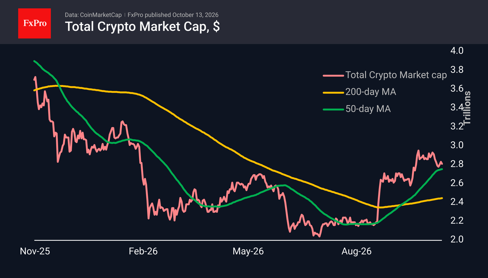
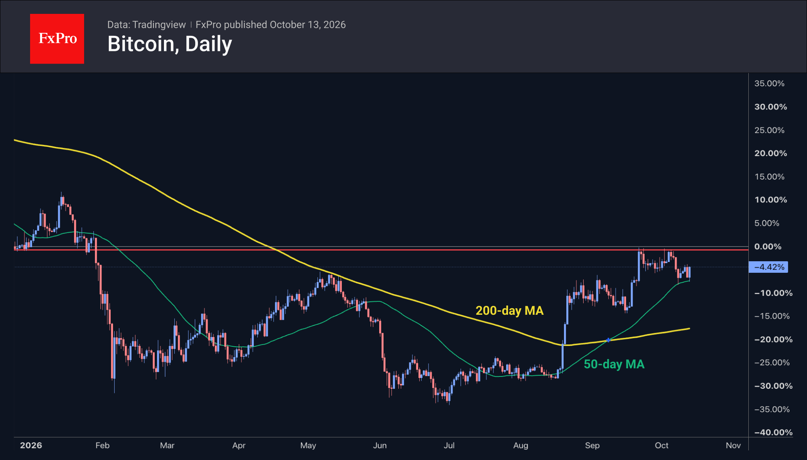

Market Overview
The crypto market’s capitalisation fell by 1% to $2.81T, approaching its 50-day moving average at its lowest point early in the day amid reduced liquidity following the close of regular US trading, but it quickly rebounded and rose at the start of the Asian trading session. The broader market context is causing concern, with the Nasdaq-100 falling and the US Dollar Index moving closer to 18-month highs. Altcoins are retreating across the board, with the ratio of gainers to losers standing at 1:18. The best performers are BAT (+13.6%), Tezos (+2.5%) and Tron (−0.7%). The biggest fallers are Near (−9.8%), Algorand (−7.7%) and VeChain (−7.4%).
The Crypto Fear & Greed Index has retreated to 57 (greed), its lowest level since 18 September. Sentiment is returning to neutral territory in the absence of price gains. However, as long as the index remains in the upper half of the scale, we remain within a bull market characterised by buying on dips.
Bitcoin’s performance since the start of the day supports our conclusion that buying appetite remains strong. Under pressure from selling in the equity markets, the leading cryptocurrency slipped to $81K, triggering a heavy layer of stop-loss orders and once again touching the 50-day moving average. In this region, as on Thursday last week, BTC found solid demand and quickly rebounded to $83.7K, demonstrating just how easily it can rise after long positions have been liquidated. If this was indeed a healthy correction, Bitcoin could rise quite quickly to $85K or retest $87K. It is also interesting to note that this sharp reversal to the upside could herald a strengthening of risk appetite on a more global scale. However, this optimism needs confirmation and could quickly fade without external validation.


News Background
High US government bond yields, expensive oil, a slowdown in ETF inflows and profit-taking left Bitcoin vulnerable to the liquidation of leveraged positions in the first half of October, according to XWIN.
Strategy has continued to buy Bitcoin for the fourth week running, but has reduced its purchases to 249 BTC at an average price of $86.2K. The company now holds 848,250 BTC at an average price of $75.4K.
Last week, Bitmine purchased an additional 12,532 ETH, bringing the total amount of Ethereum in its reserves to 6.03 million ETH (4.94% of the total supply). To reach its target of purchasing 5% of the total ETH supply, the company needs to buy a further 72,000 ETH or so.
The market capitalisation of tokenised assets has reached a record $3.9 billion. The leading blockchain is BNB Chain with a market cap of $1.2 billion, followed by Ethereum ($842 million) and Solana ($742 million). Meanwhile, Morgan Stanley has postponed the launch of trading in tokenised shares until the first quarter of 2027, citing a lack of available products and client demand.
According to Bloomberg, the US Department of Justice is investigating whether the Binance cryptocurrency exchange is complying with the terms of its 2023 agreement with the US authorities. The investigation concerns the circumvention of sanctions against Iran.
The FxPro Analyst Team